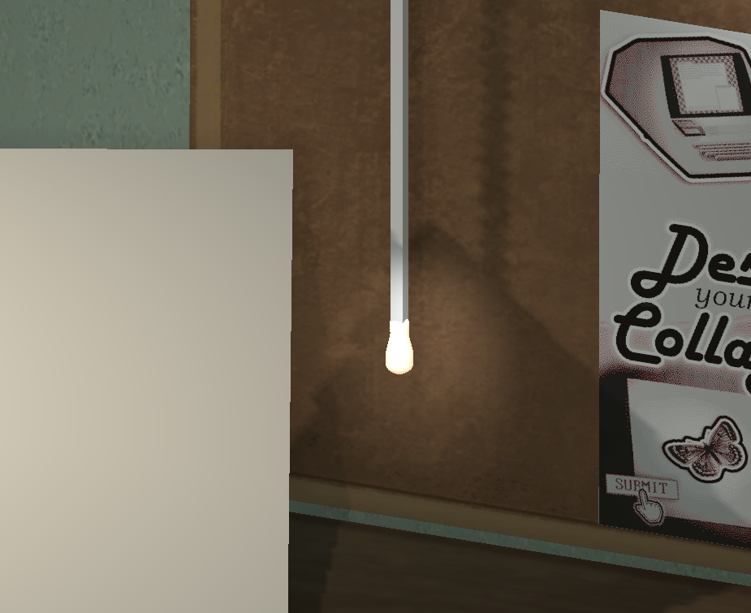

FIND. CREATE. SUBMIT.
Welcome to your new role as an ART GENERATOR at Gestalt Industries, Ltd.! Using your growing collection of artwork, you'll piece together collages according to the commissions you receive each day, earn a paycheck based on your work, and have some hard-earned relaxation chatting with your coworkers.
CREATIVITY
As an Art Generator, you have access to a wide array of artwork to use in your collages, from photographs to posters to Victorian etchings and even the letters you receive at your desk! The convenient projector-printer makes it easy to find all the images you're looking for and print out as many copies as you need. Then, it's time to get to work! Move, rotate, scale, and flip the artwork to put together your perfect composition.
All the artwork in Scrapped is in the Public Domain. That means the collages you make in-game (which are handily saved to a folder on your computer!) are yours to use, for whatever purpose you want.
Through the course of the game, your collection of artwork will grow to well over a hundred unique pieces, stored in reels that you can slot into the projector. Each day, you'll unlock a new reel of exciting artwork, with such themes as "Spirituality" and "The Human Body".
COMPENSATION
Each collage you make is scored by the Gestalt Media Oversight Department, who calculates your daily paycheck based on how well each collage matches the commission, with additional bonuses for cohesion, uniqueness, variety, and creativity! By making the most of these bonuses, you can improve your scores and overcome any unexpected disruptions to your artwork supply. And, if you really get the attention of the higher-ups, you might even earn a sticker sheet for your hard work!
COMMUNICATION
Motivation is the key to a good day's work - that's why, after you finish all your collages each day, you're entitled to some quality time chatting with your coworkers (and, of course, your watchful superiors) through the Digital Water Cooler. Of course, it's only natural that workplace tensions can get high from time to time.
CONTEXT
Scrapped is a collaboration between USC Games and the Berklee College of Music, created by developers Page Murray and Julian Avrith over the course of four months. It takes place over the course of five in-game days - roughly an hour of gameplay - split into two phases. In the Work phase, the player receives three commissions and makes collages using their growing collection of artwork. In the Postwork phase, they message with their in-game coworkers - this is the main narrative portion of the game. As the game progresses, the player will be faced with increasingly difficult choices